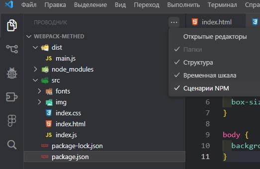

Webpack от METHED
node -v- версия node.jsnpm -v- версия npmnpm init -y- чтобы не отвечать на все вопросыnpm install webpack -D- установка webpack для разработкиnpm install webpack-cli webpack-dev-server -Dcli - нужен, чтобы webpack-ом управлять, писать различные команды.
webpack-dev-server - нужен, чтобы запускать свой сервер, а не сторонние серверы.
В файле package.json в "scripts" прописать скрипты:
"start": "set NODE_ENV=development&&webpack serve",// запуск проекта и сервера"build:dev": "set NODE_ENV=development&&webpack",// собрать проект, но в режиме разработки"build:prod": "set NODE_ENV=production&&webpack",// сборка production"clean": "rd /s /q dist"// очищает папку dist от лишних файлов. rd - команда консоли и другие флаги, что всё работало и в тихом режиме7.1. Запуск сценарий NPM:
7.2. Внизу появляютя команды для запуска:

В корневой папке проекта создаётся файл webpack.config.js в котором прописывается следующее:
entry: path = require('path'); const mode = process.env.NODE_ENV || 'development'; // process - переменная, которая содержит env // env - переменная окружения // NODE_ENV - переменная, которую создаёт разраб. // 'development' - если NODE_ENV не определена, то будет режим development const devMode = mode === 'development'; const target = devMode ? 'web' : 'browserslist'; const devtool = devMode ? 'source-map' : undefined // если режим разработки, то добавить source-map для удобства поиска ошибок, css-файлов // если режим продакшн, то undefined module.exports = { mode, target, devtool, entry: path.resolve(__dirname, 'src', 'index.js'), // путь по ступенькам к файлам проекта (__dirname - системная переменная, которая указывает полный путь до проекта) output: { path: path.resolve(__dirname, 'dist'), // путь куда всё складывается clean: true, // для очищения папки dist filename: '[name].[contenthash].js', // [name] - имя по умолчанию // .[contenthash] - для сборки разных имён } }В корневой папке создаётся файл .browserslistrc и в нём прописываются свойства под разные браузеры:
last 2 versions- для последних двух версийnot dead- браузеры рабочие> 0.5%- охват чего то больше 0.5%HTML
Источник10.1. Установка плагина для HTML:
npm install --save-dev html-webpack-plugin10.2. В webpack.config.js прописывается класс:
const HtmlWebpackPlugin = require('html-webpack-plugin');10.3. Далее в плагинах вызывается:
plugins: [new HtmlWebpackPlugin()], // вызов плагин HTML10.4. Установка плагина автоперезагрузки HTML-страницы:
npm install --save-dev html-loader10.5. В webpack.config.js прописывается:
module: { // правило (массив) rules: [ { test: /\.html$/i, // i если HTML-файл написан большими буквами loader: 'html-loader', }, ] }В index.js в самом верху прописать для слежки за изменениями:
import './index.html';11.1. Установка плагина стилей
style-loadernpm install --save-dev style-loader
CSS
SASS
Autoprefix11.2. Установка плагинов стилей, CSS, SASS и автопрефиксов:
npm install --save-dev style-loadernpm install --save-dev css-loadernpm install sass-loader sass -Dnpm install --save-dev postcss-loader postcss postcss-preset-env11.3. Установка плагина, чтобы стили были отдельным файлом:
npm install --save-dev mini-css-extract-plugin11.4. В webpack.config.js прописываются:
const MiniCssExtractPlugin = require("mini-css-extract-plugin");plugins: [ new MiniCssExtractPlugin({ filename: '[name].[contenthash].css', }), ],module: { // правило (массив) rules: [ { test: /\.(c|sa|sc)ss$/i, devMode ? 'style-loader' : MiniCssExtractPlugin.loader, "css-loader", 'sass-loader', }, ] }11.5. В index.js
import './index.scss';Сервер
В webpack.config.js прописывается:
devServer: { port: 8080, open: true, hot: true, // горячая перезагрузка стилей. Если будет глючить, тогда отключить },JavaScript
Источник
Полифил babelУстановка плагина babel-loader для поддержки различными браузерами:
npm install -D babel-loader @babel/core @babel/preset-envВ webpack.config.js прописывается:
entry: ["@babel/polyfill", path.resolve(__dirname, 'src', 'index.js')],// "@babel/polyfill" дописывается для загрузки полифилаmodule: { rules: [ { test: /\.(?:js|mjs|cjs)$/i, exclude: /node_modules/, use: { loader: 'babel-loader', options: { presets: [ ['@babel/preset-env', { targets: "defaults" }] ] } } }, ] }Шрифты
В webpack.config.js прописывается:
module: { rules: [ { test: /\.woff2?$/i, // 2?f - двойка может быть, а может не быть в формате шрифта type: 'asset/resource', generator: { filename: 'fonts/[name][ext]', // [name][ext] - имя и расширение файла } }, ] }Image
В webpack.config.js:
output: { path: path.resolve(__dirname, 'dist'), // путь куда всё складывается clean: true, // для очищения папки dist filename: '[name].[contenthash].js', // [name] - имя по умолчанию // .[contenthash] - для сборки разных имён assetModuleFilename: 'img/[hash][ext]', // название картинок. Можно [name] или [hash] - произвольное имя },В index.js прописать:
import marek from './img/image.jpg' const img = new Image(); img.src = marek;В webpack.config.js:
module: { rules: [ { test: /\.(jpe?g|png|webp|gif|svg)$/i, type: 'asset/resource', generator: { filename: 'img/[name][ext]', // [name][ext] - имя и расширение файла } }, ] }В HTML:
<section id="img" class="img"></section>В JS:
import marek from './img/image.jpg' const img = new Image(); img.src = marek; img.width = 1920; const imgWrap = document.getElementById("img"); imgWrap.appendChild(img); // И картинка загружается в HTML-тег imgСжатие изображений
ИсточникУстановка плагина:
npm install image-webpack-loader --save-devВ webpack.config.js:
module: { rules: [ { test: /\.(jpe?g|png|webp|gif|svg)$/i, use: [ { loader: 'image-webpack-loader', options: { mozjpeg: { progressive: true, }, // optipng.enabled: false will disable optipng optipng: { enabled: false, }, pngquant: { quality: [0.65, 0.90], speed: 4 }, gifsicle: { interlaced: false, }, // the webp option will enable WEBP webp: { quality: 75 } } } ], type: 'asset/resource', generator: { filename: 'img/[name][ext]', // [name][ext] - имя и расширение файла } }, ] }